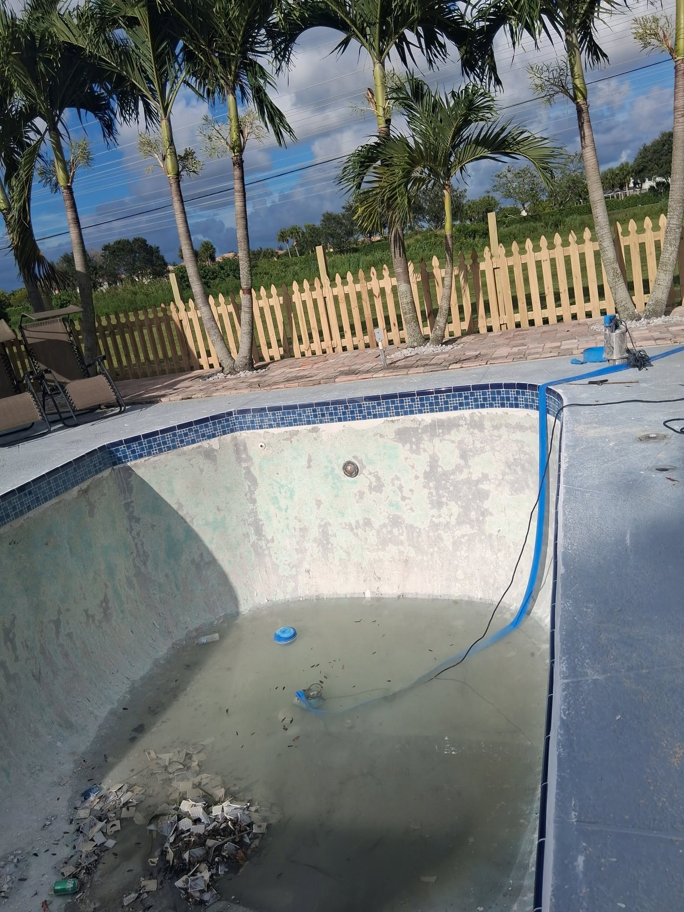

Pricing is the first question almost every homeowner asks, and the honest answer is: it depends. But vague answers aren't helpful, so in this guide we'll break down actual current pricing for paver driveway installations in the West Palm Beach area — including what drives costs up, what can bring them down, and how to evaluate whether a quote you received is fair.
Note: All prices below reflect current 2025 market rates in Palm Beach County. Prices vary by contractor, material supply, and project complexity.
Price by Material Type
The biggest cost variable is your choice of paver material:
| Material | Cost per Sq Ft (Installed) | Durability | Maintenance |
|---|---|---|---|
| Concrete Pavers | $12 – $20 | Excellent | Low |
| Clay Brick | $15 – $25 | Excellent | Very Low |
| Travertine | $20 – $35 | Good | Moderate |
| Porcelain | $25 – $45 | Excellent | Very Low |
| Natural Granite | $30 – $55 | Exceptional | Low |
Average Project Cost Examples
Here are realistic total project costs for common driveway sizes in our area:
- 600 sq ft single-car driveway (concrete pavers): $7,200 – $12,000
- 1,000 sq ft double-car driveway (concrete pavers): $12,000 – $20,000
- 1,400 sq ft large driveway (brick pavers): $21,000 – $35,000
- 1,000 sq ft double-car driveway (travertine): $20,000 – $35,000
What's Included in a Good Quote
A comprehensive paver driveway installation includes more than just laying pavers. Make sure your quote includes:
- Removal and disposal of existing concrete or asphalt (adds $1–$3 per sq ft)
- Excavation to proper depth (4–8 inches below finished grade)
- Compacted road base installation (4–6 inches)
- Bedding sand layer (1 inch)
- Edge restraints (plastic or concrete curb)
- Paver installation with specified pattern and border
- Polymeric joint sand installation and compaction
- Final sealing (first coat)
Red Flag: If a quote is significantly lower than others, ask what they're skipping. The most common shortcuts are insufficient base depth, no edge restraints, and no polymeric sand — all of which lead to premature failure within 3–5 years.

Factors That Increase Cost
- Existing material removal: Thick concrete slabs cost more to remove than thinner ones
- Poor drainage: Sites requiring French drains or custom drainage solutions add $500–$2,000+
- Complex patterns: Fan, circular, and diagonal patterns require more cuts and add 15–25% to labor costs
- Slopes and grades: Significant regrading adds to excavation and base costs
- Decorative borders and inlays: Custom multi-color designs add material and labor
- Premium materials: Large-format pavers (24"x24"+) cost more per unit and require more precise installation
Return on Investment
A well-installed paver driveway consistently returns 50–75% of its cost in home value increase, according to Florida real estate professionals we've spoken with. Beyond direct value, paver driveways require virtually no maintenance for 5–10 years if properly installed and sealed — unlike asphalt (which needs resurfacing every 3–5 years) or standard concrete (which cracks and stains permanently).
The 25–30 year lifespan of a quality paver installation means the per-year cost is often comparable to less expensive alternatives that require more frequent replacement.
How to Get an Accurate Quote
For an accurate quote, a contractor needs to visit your property — measurements and photos aren't enough. At Pavers Ordonez, our free estimates include a site visit, measurements, material samples, and a written itemized quote with no pressure and no obligation. Call us at (561) 970-1917 to schedule yours.